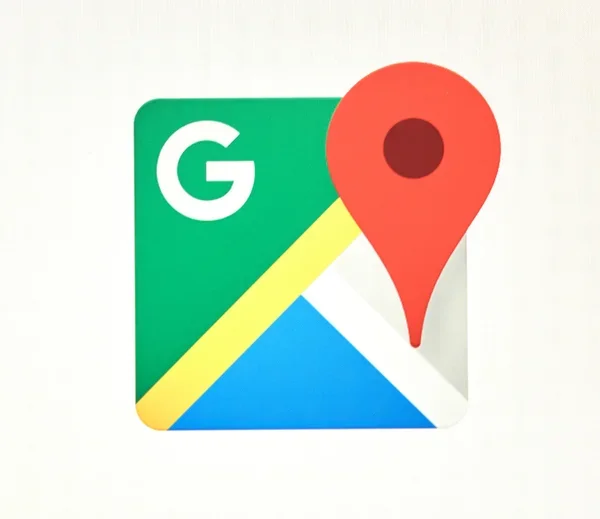
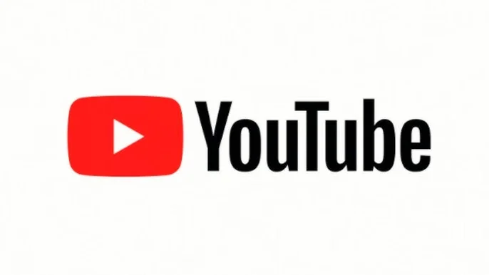

Top 5 de aplicaciones web más famosas en la actualidad
1. Google Maps

¿Cuándo se lanzó Google Maps?
Se lanzó el 8 de febrero de 2005
¿Por qué se distingue Google Maps?
Google Maps proporciona información útil para la navegación, como la distancia, el tiempo y la ruta más adecuada.
¿Qué tecnologías y herramientas fueron implementadas en su desarrollo?
- JavaScript
- XML
- APIs
- Maps Platform
- Google Lens
Enlace a la página principal
Ir a Google Maps
2. Youtube

¿Cuándo se lanzó YouTube?
Se lanzó el 14 de febrero de 2005
¿Por qué se distingue YouTube?
Youtube es la plataforma por excelencia para el contenido en video alrededor del mundo y permite ver/subir videos de
forma gratuita.
¿Qué tecnologías y herramientas fueron implementadas en su desarrollo?
- JavaScript
- Java
- Python
- Django
- APIs
Enlace a la página principal
Ir a YouTube
3. Facebook
¿Cuándo se lanzó Facebook?
Se lanzó el 4 de febrero de 2004
¿Por qué se distingue Facebook?
Facebook se distingue principalmente por ser una red social que permite a las personas conectarse con amigos, familiares y conocidos,
así como compartir información y contenido.
¿Qué tecnologías y herramientas fueron implementadas en su desarrollo?
- Linux
- Cassandra
- Hive
- Tornado
- JavaScript
Enlace a la página principal
Ir a Facebook
4. WhatsApp
¿Cuándo se lanzó WhatsApp?
Se lanzó el 22 de enero de 2009
¿Por qué se distingue WhatsApp?
WhatsApp es una aplicación de mensajería y llamadas gratuita que funciona en cualquier lugar con conexión a internet,
es asincrónica y fácil de usar.
¿Qué tecnologías y herramientas fueron implementadas en su desarrollo?
- Protocolo Extensible de Mensajería y Presencia (XMPP)
- Sistema operativo FreeBSD
- YAWS
- Erlang
- Java
- SQLite
Enlace a la página principal
Ir a WhatsApp
5. LinkedIn
¿Cuándo se lanzó LinkedIn?
Se lanzó el 5 de mayo de 2003
¿Por qué se distingue LinkedIn?
LinkedIn se distingue por ser una plataforma para el networking, es también una herramienta que permite mostrar la
experiencia, habilidades y logros profesionales, así como también relacionarse con reclutadores y gerentes
de contratación.
¿Qué tecnologías y herramientas fueron implementadas en su desarrollo?
- Scala
- Java
- Spring
- Eclipse Jetty
- Apache Tomcat
Enlace a la página principal
Ir a LinkedIn